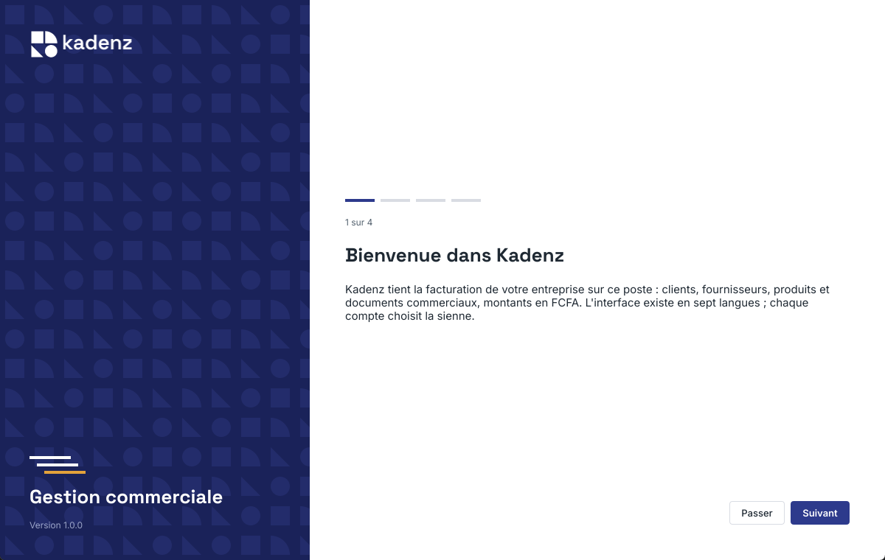
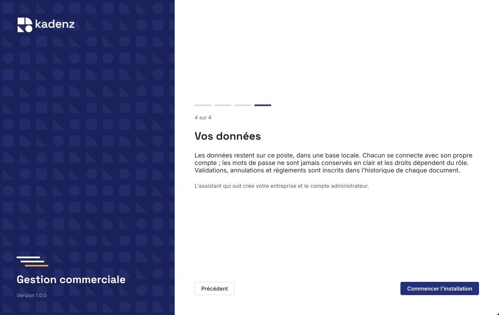

Présentation
Poste, premier lancement : avant l'inscription




- Remarque de l'utilisateur : trop de texte sur les quatre écrans.
- Remarque de l'utilisateur : le texte n'est pas fixe, il monte et redescend d'une page à l'autre. Mesure : le haut du bloc passe de 270 à 252, 261 puis 252 px, parce que le bloc est centré verticalement et que la longueur du paragraphe change (31 à 65 mots).
- La page 4 parle d'une base locale sur le poste et annonce « l'assistant qui suit » ; en 1.0, le poste passe ensuite à l'inscription, pas à l'assistant. Texte à revoir avec la refonte.